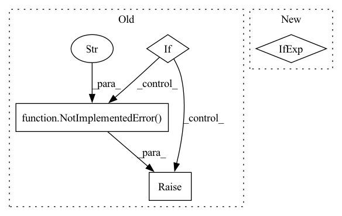

Pattern ID :34393

Before Change
self.padding_token_idx = self.tokenizer.pad_token_id
self.loss = nn.CrossEntropyLoss(ignore_index=self.padding_token_idx, reduction="none")
if config["task_type"] == "summarization":
self.t5_task_text = "summarize: "
elif config["task_type"] == "translation":
self.t5_task_text = "translate German to English: "
else:
raise NotImplementedError("Only summarization and translation are supported.")
def generate(self, batch_data, eval_data):
source_text = batch_data["source_text"]
input_ids, attn_masks = self.tokenize_text(source_text)
After Change
self.tokenizer = T5Tokenizer.from_pretrained(self.pretrained_model_path)
self.configuration = T5Config.from_pretrained(self.pretrained_model_path)
self.model = T5ForConditionalGeneration.from_pretrained(self.pretrained_model_path, config=self.configuration)
self.task_prefix = config["task_prefix"] if config["task_prefix"] else ""
def generate(self, batch_data, eval_data):
source_text = batch_data["source_text"]
In pattern: SUPERPATTERN
Frequency: 3
Non-data size: 4
Instances
Fragment ID: 98652179
Project Name: rucaibox/textbox
Commit Name: 62b0e37edc873093b5a92c978ed23d0e304f7de2
Time: 2022-01-18
Author: wxDai2001@gmail.com
File Name: textbox/model/Seq2Seq/t5.py
M Class Name: T5
N Class Name: T5
M Method Name: __init__(3)
N Method Name: __init__(3)
M Parent Class: Seq2SeqGenerator
N Parent Class: Seq2SeqGenerator
M File Name: textbox/model/Seq2Seq/t5.py
N File Name: textbox/model/Seq2Seq/t5.py
M Start Line: 26
M End Line: 40
N Start Line: 35
N End Line: 35
'>
Before Change
if dtype is None:
dtype = torch.get_default_dtype()
if dtype in {torch.complex64, torch.complex128}:
raise NotImplementedError("Complex hypervectors are not supported yet.")
if dtype == torch.uint8:
raise ValueError("Unsigned integer hypervectors are not supported.")
After Change
raise ValueError("Unsigned integer hypervectors are not supported.")
if dtype in {torch.complex64, torch.complex128}:
dtype = torch.float if dtype == torch.complex64 else torch.double
angle = torch.empty(
num_embeddings, embedding_dim, dtype=dtype, device=device
'>
Fragment ID: 98652178
Project Name: hyperdimensional-computing/torchhd
Commit Name: 1f7e9dbf92a4a1be0d4285b6ccd7231afa85c2a3
Time: 2022-06-07
Author: mikeheddes@gmail.com
File Name: torchhd/functional.py
M Class Name: AnonimousClass
N Class Name: AnonimousClass
M Method Name: random_hv(0)
N Method Name: random_hv(0)
M Parent Class:
N Parent Class:
M File Name: torchhd/functional.py
N File Name: torchhd/functional.py
M Start Line: 132
M End Line: 135
N Start Line: 178
N End Line: 193
'>
Before Change
if config["task_type"] == "summarization":
self.task_text = "TL;DR:"
elif config["task_type"] == "translation":
self.task_text = "story:"
elif config["task_type"] == "multi_dialog":
self.task_text = "question:"
else:
raise NotImplementedError("Only summarization and translation are supported.")
self.loss = nn.CrossEntropyLoss(ignore_index=self.padding_token_idx, reduction="none")
def generate(self, batch_data, eval_data):
After Change
self.configuration = GPT2Config.from_pretrained(self.pretrained_model_path, pad_token_id=self.tokenizer.pad_token_id)
self.model = GPT2LMHeadModel.from_pretrained(self.pretrained_model_path, config=self.configuration)
self.model.resize_token_embeddings(len(self.tokenizer))
self.task_prefix = config["task_prefix"] if config["task_prefix"] else ""
def generate(self, batch_data, eval_data):
source_text = batch_data["source_text"]
'>
Fragment ID: 98652181
Project Name: rucaibox/textbox
Commit Name: 81da6bb852a3637c8053ccf5f9b236dc4283fd86
Time: 2022-01-20
Author: wxDai2001@gmail.com
File Name: textbox/model/Seq2Seq/gpt2seq.py
M Class Name: GPT2Seq
N Class Name: GPT2Seq
M Method Name: __init__(3)
N Method Name: __init__(3)
M Parent Class: Seq2SeqGenerator
N Parent Class: Seq2SeqGenerator
M File Name: textbox/model/Seq2Seq/gpt2seq.py
N File Name: textbox/model/Seq2Seq/gpt2seq.py
M Start Line: 37
M End Line: 46
N Start Line: 31
N End Line: 31